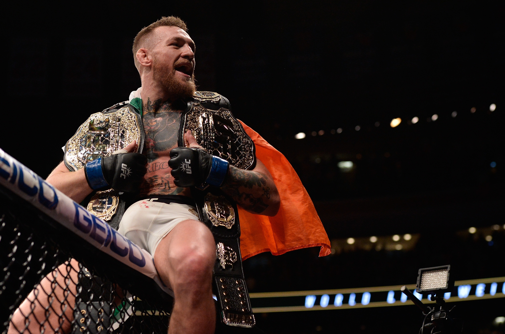
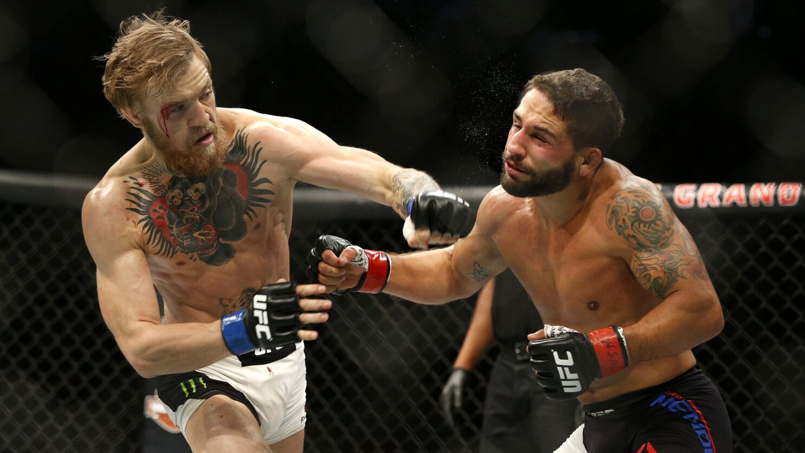
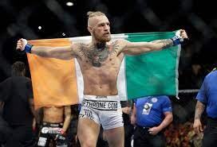
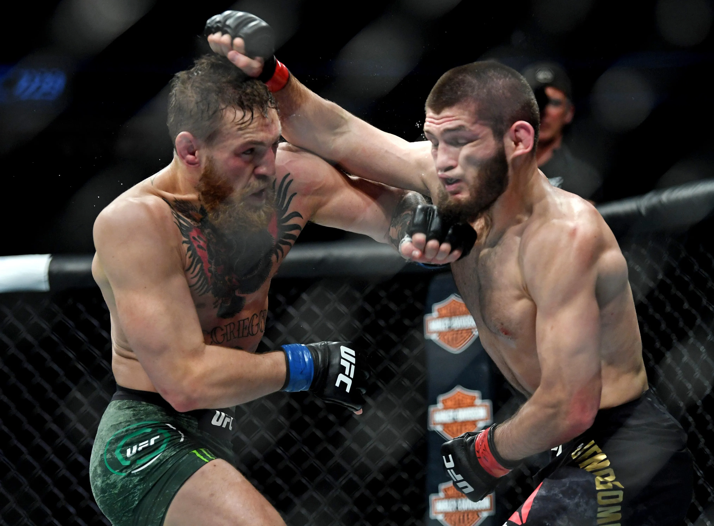
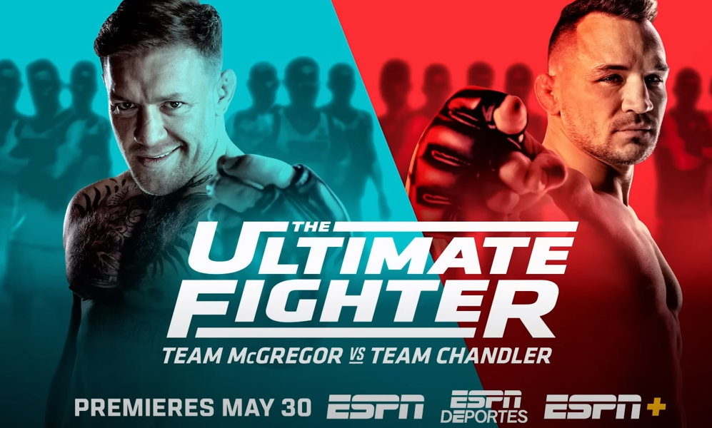

The Notorious Conor McGregor
intro
Conor McGregor is debatably the baddest in the sport. He is often regarded as bringing the UFC to the point in popularity that it is
now. He is regarded as a "salesman", as he sells the fight, he makes people want to watch him fight, and probably get knocked out too.
He started boxing at a young age, and rose to popularity fairly quickly. He went on to become known world wide as an MMA phenom.
Many, (formerly including myself) consider him to be cocky and arrogant, too much for his own good. Many dislike him for his attitude and
disrespectful nature, but at the end of the day you realize that he needs people to watch his fight for him to get paid. He truly is the
best known in the sport. When you say MMA, most people say Conor McGregor. Here, you will learn about, and maybe even appreciate Conor Mcgregor.

Early Days
Based out of Dublin, Ireland, McGregor started boxing at a young age, and later moved into mixed martial arts, Along with his best
friend Tom Egan. He decided to give his life to MMA, which would also mean that he would not make much. He was poor for a time, chasing the
dream of being best in the world. He would continue to fight in ametour fights, while Egan would make it to the UFC, to become the first Irishman
to make it to the big leagues of MMA. McGregor soon realized that was what he wanted. He continued to train hard, after taking a break. He would
soon make it into the UFC under the training of an Icelandic fighter named Gunnar Nelson. He would quickly rise to become the fighter we all
recognize and most -whether they like him or not- respect.

Currently/Near Past
Conor McGregor is known as the wealthiest MMA fighter in the world, with a net worth of 200 million dollars! He made this money through his
extensive, and impressive MMA career. He first started with an impressive win against Marcus Brimage, and then went on to fight an impressive
fighter on his own, Max Holloway, as his second fight, which he won by unanimus decision. He then went on a long streak of wins, where he became
a double champion (a champion in two different weight classes), the first that we had ever seen in the UFC. The fight streak ended with Nate Diaz,
via submission. He then went on to win against Nate Diaz, as his next fight, fighting him twice in a row. He won this second match proving his
resilience and strength. But no one could have predicted what would happened in the debatably most famous of his fights. The Khabib Fight.

The Storm
Many refer to the Khabib and McGregor fight as the storm, because many consider it to be Conor McGregors undoing. It is also one of the
biggest fights in MMA history. It was a intense fight, and one with the stakes risen high. Conor McGregor had been his usual self, and sold the fight,
making Khabib out to be his rival. He hyped up the fight to the point that 2.4 million people bought the PPV (pay-per-view). It was an intense and
incredible fight, ending in an all out riot when Khabib submitted McGregor. Khabib clipped Conor with a right hand, setting him down, where khabib would
go down and finish him. It will go down as one of the greatest and most anticipated fights in all of UFC history, and is a crazy fight to go back
and re-watch.

Current
Currently, Conor is taking part in the ultimate fighter, a series out of the UFC, where a proffessional trains ametour fighters in hopes
of getting them into the UFC. He plans to fight Michael Chandler, but the weight, time, and event are unsure. Many fans are waiting eagerly for he return
of Conor McGregor, as it has been 3 years since he last fought. I personally cannot wait for his "notorious" return.